Demo of NBIS Checklist
Purpose
The purpose of NBIS Checklist is to ensure that the research group and
NBIS bioinformatician agree, and are aware of, data management strategies
for the suppport project, as well as provide the NBIS data steward with
sufficient information to be able to assist with data management issues in
general and specifically with data publication.
Contents
Get started
- Click on
Projects in left-hand margin
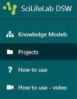
- Click on
Create in top right corner, name the project
<your_name>_<short project name>, select knowledge model named
NBIS Checklist… and click on Save
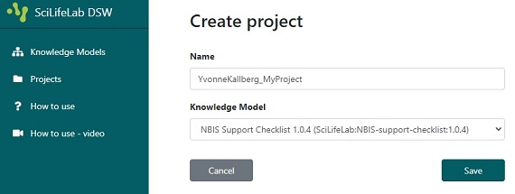
Note on terminology
- Knowledge Model = a question template; this selection decides which questions
will be asked
Orientation
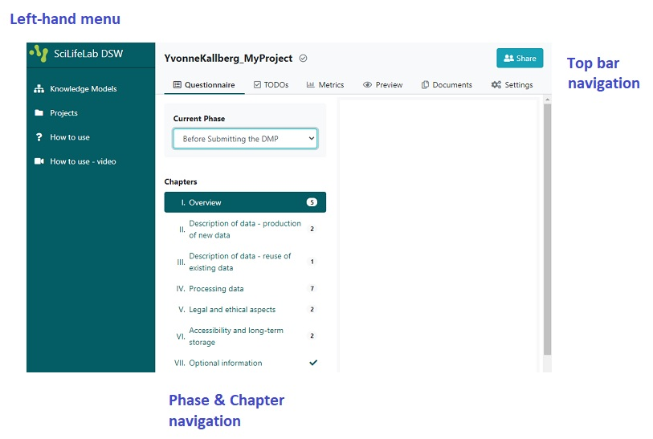
- The menu on the left-hand margin is the top level menu of the tool, with
how-to-use links and where you can find all your projects
- In the top of the page, there is a navigation bar with tabs that allows you to
shift between different views of the current project
- Next to the left-hand menu, there is a Phase & Chapters overview, where you can
change phase and see how many questions that needs to be answered. By clicking on
one of the chapters you will reach that part of the checklist.
Fill the checklist
The DSW provides a filtering feature that allows you to see questions relevant only
to a particular phase of a research project.
- Change the phase to
Before Submitting the DMP
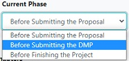
- The answers will be saved automatically.
- Under most of the questions you will find guidance or advice on how to answer
or what to consider.
- For some questions you may provide more than one answer. If you want to add a new
answer click the
Add button at the end of your last answer. Note: When
doing so, you might need scroll up in order to get to the first field to be filled.
- Your checklist is ready to be filled. Answer the questions in red (these are the
questions that should be answered during the selected phase, questions which belong
to other phases are in black).
Note
Notice that once a question has been answered, it becomes green. When all questions in a
chapter has been answered, this chapter becomes ticked in the Chapters overview, instead of
showing the number of questions that should be answered.
Add a TODO
The tool has a TODO function, which lets you mark questions where an action is necessary.
Example
- Click on
I. Overview in the Chapters overview menu
and scroll down to the question 6. Is a DMP available for this project??
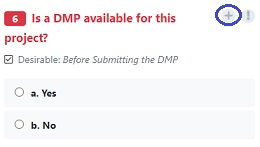
- Click on the
+ sign next to this question.
- Notice that you now have 1 TODOs in the orientation bar in the top of the page.
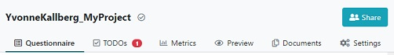
Create a document file
When the questions are answered you can create a document with your answers, and download it to
your computer.
Example
- Click on
Settings in the orientation bar in the top of the page.
- Select
SciLifeLab Full from the list of templates.
- Select
MS Word Document from Default format.
- Click
Save
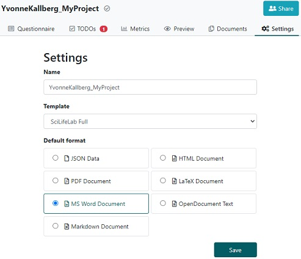
- Now you can click on
Documents in the orientation bar in the top of the page.
- Click on the
New document button.
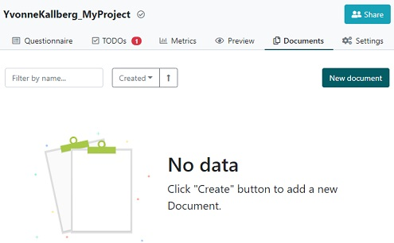
- Since all the setting selections has been made already, click on
Create in the
appearing window.
- To inspect the resulting document, click on the three vertical dots to the left of
the document and select
Download in the appearing menu.
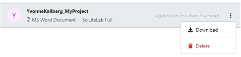
How to collaborate
There might be situations where one might want to share a link to your checklist:
- Collaborators in the project needs to answer some questions
- A stakeholder, such as the NBIS data steward, want to view the answers
In order to make this possible, click on
Share in the top right corner of the
orientation bar.
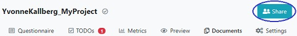
Activate the
Public link and select if you want the person with the link to
view or
edit, click on
Save.
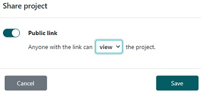
Now you can copy the link in the address bar (e.g.
YvonneKallberg_MyProject)
and share with whomever you want, without them having to log in!